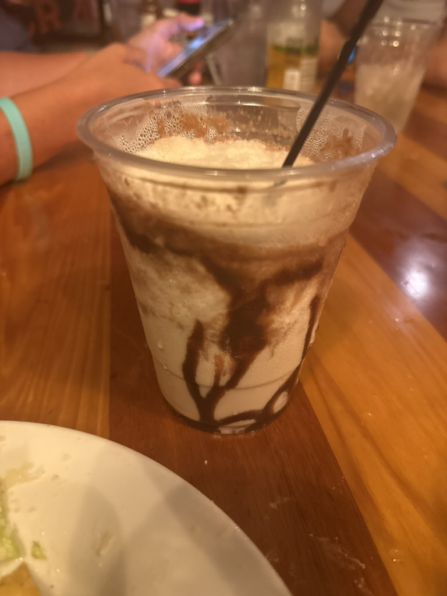

🥥 The Bushwacker
The Gulf Coast's Official Frozen Milkshake (With A Kick)

The Official Drink
Of The Gulf Coast
Of The Gulf Coast
Tastes like a chocolate milkshake. Hits like a Tuesday you didn't see coming.
- The recipe: dark rum, coconut rum, coffee liqueur, cream of coconut & milk, blended with ice until it's basically a boozy milkshake — chocolate syrup drizzle non-negotiable.
- The origin story: most accounts trace it to 1975 at the Sandshaker Lounge on Pensacola Beach — twenty minutes up the road from where we're sitting.
- The rivalry: a beach bar on St. Croix claims to have invented it the same year. Neither side has backed down in 50 years.
- The proof it stuck: Pensacola Beach throws an actual Bushwacker Festival every Memorial Day weekend in its honor.
- The catch: it drinks like dessert, not like four rums and a liqueur — which is exactly how the legend keeps getting made.
Drink responsibly. Refill irresponsibly.